浏览器类型鉴别那些事
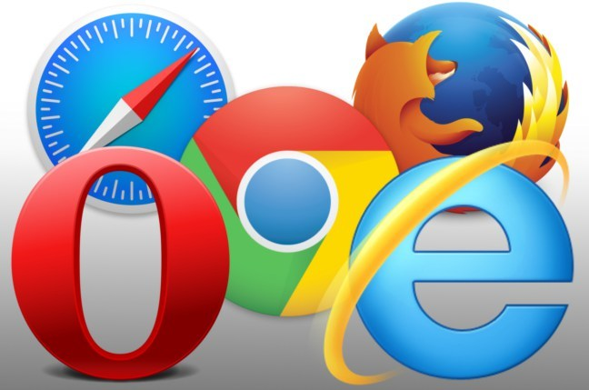
方法有两种：
- 根据浏览器特性来判断
- 根据UA来检测
具体使用哪种方法要看具体需求的场景
场景一：为了让用户有较流畅完整的体验，在站点提示用户使用chrome或者IE，这种场景对浏览器类型的判断并非特别严格，可以使用检测UA的方法。（因为很多浏览器厂商会篡改UA标识）。
针对此场景举个栗子：
*根据不同浏览器对API或标准实现的不同来判断浏览器，接着做相应兼容性操作。
var button = document.getElementById("button");
if(button.addEventListener){
button.addEventListener("click", handler, false);
}else{
button.attachEvent("onclick", handler);
}
function handler(event){
var src = event.target ? event.target : event.srcElement;
console.log(src.value);
}场景二：如果是要调用的某个API不同内核的浏览器实现不同，这种情况要做精准的判断，直接检测其某个独有的特性。下面着重说下这种方法。
比如我的需求是检测提示使用非chrome浏览器的用户使用chrome浏览器（或webkit内核浏览器），适合使用通过检测UA，判断浏览器类型的方法。
console.log(navigator.userAgent);先看一下国内桌面浏览器市场份额
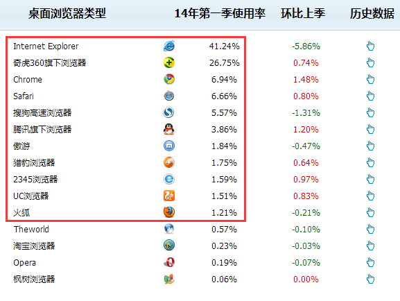
来自：CNZZ
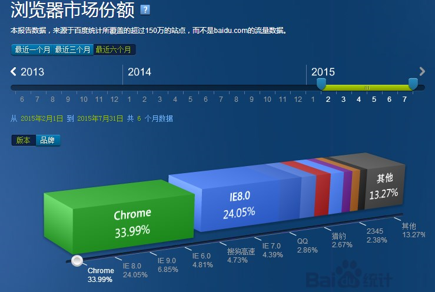
来自：百度统计
结论：国内市场，IE + chrome + Safari + 360 + sogou + QQ 占据90%以上份额
另外Firefox、猎豹、UC等几个份额超过1%
IE
IE可以通过检测“MSIE”字段来识别
IE10的ua
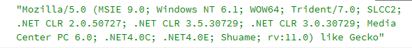
IE11的ua
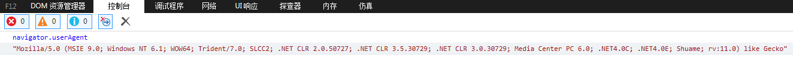
chrome
UA检验较难，很多国内浏览器厂商都有相同字段。三个字段，APPLEWEBKIT/CHROME/SAFARI
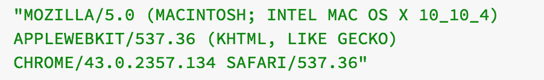
Safari
检测“SAFARI”和“VERSION”，version后面是版本号
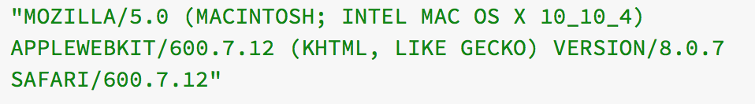
Firefox
通过检测“Firefox”字段即可
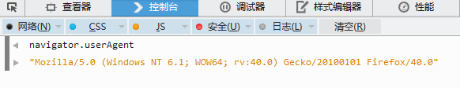
国产浏览器们
国产浏览器很多是双核模式，Trident和Webkit。一般会把自己的标识带在最后面。
拿它们没办法，只能退而求其次，判断是否使用webkit内核，检测“Webkit”字符串
sogou搜狗
检测“SE 2.X MeSr 1.0”字段
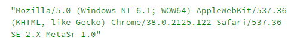
QQ浏览器
极速模式（使用chrome内核），检测"QQBrowser"字段
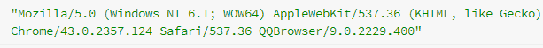
兼容模式（使用IE内核），和IE一样检测MSIE字段
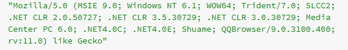
UC
检测“UBrowser”字段
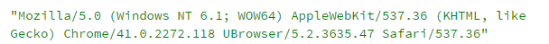
360安全浏览器
比较无语，在自己导航页会显示UA，其他域名下会隐藏UA，有的话就是QIHU 360SE
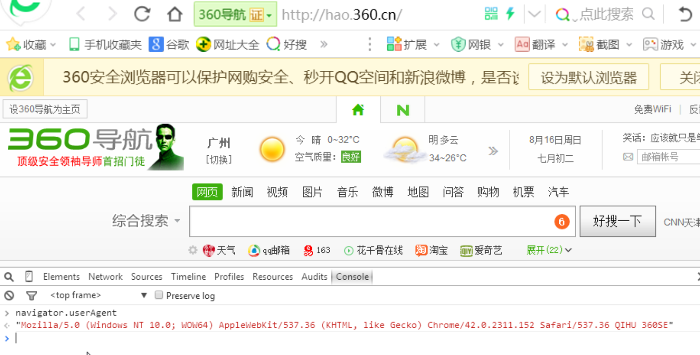
判断非chrome浏览器的实现代码
(function(){
var ua = navigator.userAgent.toUpperCase();
if(/QQBROWSER/.test(ua) ||/UBROWSER/.test(ua) || /SE[\s\.a-zA-Z\d]+MESR/.test(ua)){
console.log("国产浏览器");
handler()
}else if(/VSERSION\/[\d\.]+SAFARI]/.test(ua)){//safari浏览器
console.log("safari");
handler()
}else if(/FIREFOX/.test(ua)){
console.log("Firefox");
handler()
}else if(/MSIE/.test(ua)){//IE浏览器或国产IE内核浏览器
console.log("IE");
handler();
}
})();
参考
数据统计
http://brow.data.cnzz.com/main.php?s=brow&uv=0&type=3
http://tongji.baidu.com/data/browser/
检测方法
http://www.cnblogs.com/hykun/p/Ua.html#cnBrowser
http://www.cnblogs.com/leadzen/archive/2008/09/06/1285764.html
http://qbaty.iteye.com/blog/977601
题图来自：http://www.theregister.co.uk/2014/12/12/yahoo_suggests_firefox_upgrade/
_________
github博客，求star：https://github.com/suibobuzhuliu/blog/issues